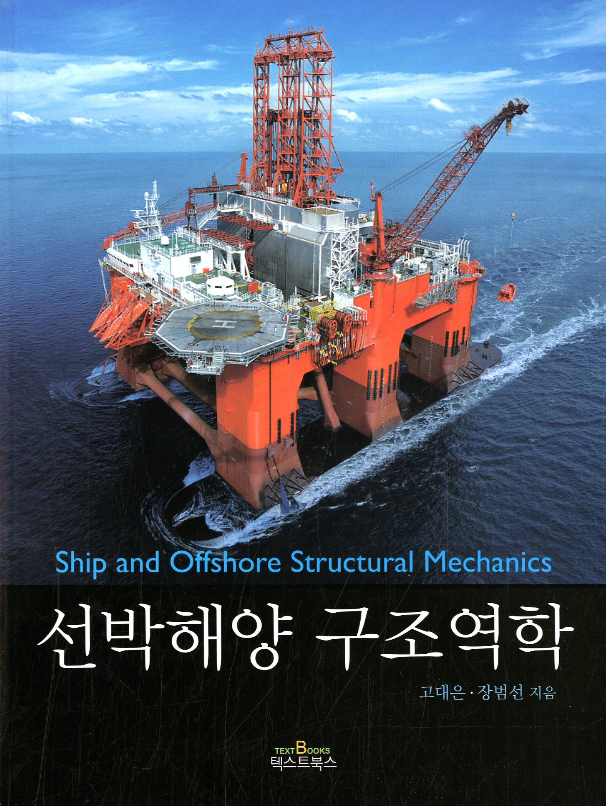

| 74. | Do Kyun Kim, Seunghyun Cho, Dong-in Park, Beom Seon Jang, Nak-Kyun Cho, Jinha Hwang (2024.12) "Condition assessment of primary barriers in LNG cargo containment systems under multifaceted loadings: tension, compression, shear and pressure", Ships and Offshore Structures, pp.1-16 (SCI, ISSN: 1744-5302) |
| 73. | Yu-Yao Lin, Beom-Seon Jang, Sang-Woong Han, Young-Hwan Park, Jinha Hwang, Do Kyun Kim (2024.05) "Cutting-edge insights: Crack growth rates in 9% Ni steel from room to cryogenic conditions influenced by crack closure and effective stress intensity factors", Engineering Fracture Mechanics, vol.301, pp.110014 (SCI, ISSN: 0013-7944) |
| 72. | Dac Dung Truong, Van Vu Huynh, Beom-Seon Jang, Hoai Nam Quach, Xuan-Phuong Dang, Hao Dinh Duong, Sang-Rai Cho (2023.01) "Empirical formulations for prediction of permanent set evolution of steel plates due to repeated impulsive pressure loadings induced by slamming", Ocean Engineering, vol.268, pp.113430 (SCI, ISSN: 0029-8018) |
| 71. | Han-Baek Ju, Beom-Seon Jang, Ki-Ho Yim (2022.12) "Prediction of sloshing pressure and structural response of LNG CCS", Ocean Engineering, vol.266, pp.112298 (SCIE, ISSN: 0029-8018) |
| 70. | Dac Dung Truong, Beom-Seon Jang (2022.08) "Estimation of ice loads on offshore structures using simulations of level ice-structure collisions with an influence coefficient method", Applied Ocean Research, vol.125, pp.103235 (SCIE, ISSN: 0141-1187) |
| 69. | Jeong-Hwan Kim, Wenjun Lu, Raed Lubbad, Sveinung Løset, Beom-Seon Jang (2022.07) "Dynamic bending of an ice wedge resting on a winkler-type elastic foundation", Cold Regions Science and Technology, vol.199, pp.103579 (SCIE, ISSN: 0165-232X) |
| 68. | Beom-Seon Jang, Yonghee Ryu, Heesung Lee, Chaewon Yoo (2022.02) "A method to generate a pipe model to compensate for low congestion level of 3D geometry available at the early stage of detailed design", Journal of Loss Prevention in the Process Industries, vol.75, pp.104693 (SCIE, ISSN: 0950-4230) |
| 67. | Han-Baek Ju, Beom-Seon Jang, Junhwan Choi, Jung Kim, Sang-Bae Jeon (2022.01) "Simplified contact-based segment expansion (CBSE) method for assessment of crashworthiness of double-hulled ship structure", Ships and Offshore Structures, vol.17(1), pp.188-204 (SCIE, ISSN: 1744-5302) |
| 66. | Dac Dung Truong, Beom-Seon Jang, Han-Baek Ju, Sang Woong Han (2022.01) "Prediction of slamming pressure considering fluid-structure interaction. Part I: numerical simulations", Ships and Offshore Structures, vol.17(1), pp.7-28 (SCIE, ISSN: 1744-5302) |
| 65. | Junhwan Choi, Beom-Seon Jang, Hanbaek Ju, Sungkon Han (2021.09.01) "Undrained bearing capacity of spudcan in soft-over-stiff clay after penetration", Ocean Engineering, vol.235, pp.109369 (SCIE, ISSN: 0029-8018) |
| 64. | Jeong Du Kim, Beom-Seon Jang, Hyeon-Jin Kim (2021.09) "Application of analytical model in the prediction of dynamic responses and fatigue damage of flexible risers: Part II – Dynamic analysis of flexible risers in large-scale domain using a direct moment correction method", Marine Structures, vol.79, pp.103051 (SCIE, ISSN: 0951-8339) |
| 63. | Jeong Du Kim, Beom-Seon Jang, Ran-Hui Yun (2021.09) "Application of analytical model in the prediction of dynamic responses and fatigue damage of flexible risers: Part I – Improvement of analytical model considering shear deformation and varying tension effects", Marine Structures, vol.79, pp.103044 (SCIE, ISSN: 0951-8339) |
| 62. | Dac Dung Truong, Beom-Seon Jang, Carl-Erik Janson, Jonas W.Ringsberg, Yasuhira Yamada, Kota Takamoto, Yasumi Kawamura, Han-Baek Ju (2021.09) "Benchmark study on slamming response of flat-stiffened plates considering fluid-structure interaction", Marine Structures, vol.79, pp.103040 (SCIE, ISSN: 0951-8339) |
| 61. | Dac Dung Truong, Beom-Seon Jang, Han-Baek Ju (2021.09) "Development of simplified method for prediction of structural response of stiffened plates under explosion loads", Marine Structures, vol.79, pp.103039 (SCIE, ISSN: 0951-8339) |
| 60. | Jonas W.Ringsberg, Ionel Darie, Ken Nahshon, Gillian Shilling, Murilo Augusto Vaz, Simon Benson, Lars Brubak, Guoqing Feng, Masahiko Fujikubo, Marco Gaiotti, Zhiqiang Hu, Beom-Seon Jang, Jeom-Kee Paik, Martin Slagstad, Kristjan Tabri, Yikun Wang, Bjarne Wiegard, Daisuke Yanagihara (2021.09) "The ISSC 2022 committee III.1-Ultimate strength benchmark study on the ultimate limit state analysis of a stiffened plate structure subjected to uniaxial compressive loads", Marine Structures, vol.79, pp.103026 (SCIE, ISSN: 0951-8339) |
| 59. | Junhwan Choi, Beom-Seon Jang, Hanbaek Ju (2021.07.15) "Yield interaction model of jack-up considering nonlinear load-displacement relationship before yield", Ocean Engineering, vol.232, pp.109099 (SCIE, ISSN: 0029-8018) |
| 58. | Han-Baek Ju, Beom-Seon Jang, Junhwan Choi, Ki-Ho Yim, YoungJun Yang, Sungkon Han (2021.07) "Structural safety assessment procedure for membrane-type LNG CCS considering hydroelasticity effect", Marine Structures, vol.78, pp.102962 (SCIE, ISSN: 0951-8339) |
| 57. | Hyeon-jin Kim, Beom-Seon Jang (2021.01) "Fatigue life prediction of ship and offshore structures under wide-banded non-Gaussian random loadings: Part II: extension to wide-banded non-Gaussian random processes", Applied Ocean Research, vol.106, pp.102480 (SCIE, ISSN: 0141-1187) |
| 56. | Dac Dung Truong, Beom-Seon Jang, Han-Baek Ju, Sang Woong Han (2021.01) "Prediction of slamming pressure considering fluid-structure interaction. Part II: Derivation of empirical formulations", Marine Structures, vol.75, pp.102700 (SCIE, ISSN: 0951-8339) |
| 55. | Hyeonsu Jeong, Beom-Seon Jang, Jeong Du Kim, Gunil Park, Jaewoong Choi, Dongyeon Lee (2020.12) "A study on effects of slug flow on dynamic response and fatigue damage of risers", Ocean Engineering, vol.217, pp.107965 (SCIE, ISSN: 0029-8018) |
| 54. | Hyeon-Jin Kim, Beom-Seon Jang, Jeong Du Kim (2020.08) "Fatigue-damage prediction for ship and offshore structures under wide-banded non-Gaussian random loadings part I: Approximation of cycle distribution in wide-banded gaussian random processes", Applied Ocean Research, vol.101, pp.102294 (SCIE, ISSN: 0141-1187) |
| 53. | Jeong Du Kim, Beom-Seon Jang, Ran-Hui Yun, Hyeon-Su Jeong (2020.08) "Improvement of the bending behavior of a flexible riser: Part ii – hysteretic modeling of bending stiffness in global dynamic analysis", Applied Ocean Research, vol.101, pp.102249 (SCIE, ISSN: 0141-1187) |
| 52. | Ran-Hui Yun, Beom-Seon Jang, Jung Du Kim (2020.08) "Improvement of the bending behavior of a flexible riser : Part I – nonlinear bending behavior considering the shear deformation of polymer layers", Applied Ocean Research, vol.101, pp.102204 (SCIE, ISSN: 0141-1187) |
| 51. | Han-Baek Ju, Beom-Seon Jang, Junhwan Choi, Jung Kim, Sang-Bae Jun (2020.05) "Simplified buckling-and-contact-based expansion method for assessment of crashworthiness of double-hulled ship structure", Marine Structures, vol.71, pp.102719 (SCIE, ISSN: 0951-8339) |
| 50. | Jae-Ho Lee, Beom-Seon Jang, Hyeon-Jin Kim, Sang Hoon Shim, Sung Woo Im (2020.05) "The effect of weld residual stress on fracture toughness at the intersection of two welding lines of offshore tubular structure", Marine Structures, vol.71, pp.102708 (SCIE, ISSN: 0951-8339) |
| 49. | YanLin Jin, Beom-Seon Jang (2020.01) "Determination of gas cloud shape for explosion risk analysis of offshore topside process area", Process Safety and Environmental Protection, vol.133, pp.183-200 (SCIE, ISSN: 0957-5820) |
| 48. | Junhwan Choi, Beom-Seon Jang, Jung-Ho Park, Hyeon-Jin Kim, Seung Cheol Park (2019.10) "Improved environmental contour methods based on an optimization of hybrid models", Applied Ocean Research, vol.91, pp.101901 (SCIE, ISSN: 0141-1187) |
| 47. | Haibin Jin, Kangsu Lee, Junhwan Choi, Beom-Seon Jang (2019.09) "Study on Spudcan Soil-Structure Interaction of a Wind Turbine Installation Vessel", International Journal of Offshore and Polar Engineering, vol.29(3), pp.329-338 (SCIE, ISSN: 1053-5381) |
| 46. | Jeong Du Kim, Beom-Seon Jang, Sang Woong Han, Sang Hoon Shim, Sung Woo Im (2019.08) "Use of built-up H sections as secondary members in topside modules", Proceedings of the Institution of Mechanical Engineers, Part M: Journal of Engineering for the Maritime Environment, vol.233(3), pp.825-843 (SCIE, ISSN: 1475-0902) |
| 45. | Jun Zhao, Beom-Seon Jang, Menglan Duan, Congfu Liang (2019.06) "A finite element approach for predicting the full resistance profile of a spudcan deeply penetrating in dense sand overlying clay", Applied Ocean Research, vol.87, pp.155-164 (SCIE, ISSN: 0141-1187) |
| 44. | Beom-Seon Jang, Jae Dong Kim, Tae-Yoon Park, Sang Bae Jeon (2019.01) "FEA based optimization of semi-submersible floater considering buckling and yield strength", International Journal of Naval Architecture and Ocean Engineering, vol.11, no.1, pp.82-96 (SCIE, ISSN: 2092-6782) |
| 43. | Dong-Hyun Yoo, Beom-Seon Jang, Ran-Hui Yun (2019.01) "A simplified multi-layered finite element model for flexible pipes", Marine Structures, vol.63, pp.117-137 (SCI, ISSN: 0951-8339) |
| 42. | Hyeon-Jin Kim, Kangsu Lee, Beom-Seon Jang (2018.07) "A linearization coefficient for Morison force considering the intermittent effect due to free surface fluctuation", Ocean Engineering, vol.159, pp.139-149 (SCI, ISSN: 0029-8018) |
| 41. | Han-Baek Ju, Beom-Seon Jang, Dong-Beom Lee, Hyeon-Jin Kim, Chang-Kyu Park (2018.02) "A simplified structural safety assessment of a fin-typed energy saving devices subjected to nonlinear hydrodynamic load", Ocean Engineering, vol.149, pp.245-259 (SCI, ISSN: 0029-8018) |
| 40. | Hyeon-Jin Kim, Beom-Seon Jang, Chang-Kyu Park, Yoon Hyeok Bae (2018.02) "Fatigue analysis of floating wind turbine support structure applying modified stress transfer function by artificial neural network", Ocean Engineering, vol.149, pp.113-126 (SCI, ISSN: 0029-8018) |
| 39. | YanLin Jin, Beom-Seon Jang (2018.01) "Probabilistic explosion risk analysis for offshore topside process area. Part Ⅱ: Development of gas cloud multivariate frequency distribution (MVFD)", Journal of Loss Prevention in the Process Industries, vol.51, pp.159-168 (SCIE, ISSN: 0950-4230) |
| 38. | YanLin Jin, Beom-Seon Jang (2018.01) "Probabilistic explosion risk analysis for offshore topside process area. Part Ⅰ: A new type of gas cloud frequency distribution for time-varying leak rates", Journal of Loss Prevention in the Process Industries, vol.51, pp.125-136 (SCIE, ISSN: 0950-4230) |
| 37. | Jonas W. Ringsberg, Svein Erling Heggelund, Paul Lara, Beom-Seon Jang, Spyros E. Hirdaris (2017.07) "Structural response analysis of slamming impact on free fall lifeboats", Marine Structures, vol.54, pp.112-126 (SCI, ISSN: 0951-8339) |
| 36. | Dong-Hyun Yoo, Beom-Seon Jang, Ki-Ho Yim (2017.07) "Nonlinear finite element analysis of failure modes and ultimate strength of flexible pipes", Marine Structures, vol.54, pp.50-72 (SCI, ISSN: 0951-8339) |
| 35. | MinJu Gam, Beom-Seon Jang, JungHo Park (2017.06) "A study on the fatigue analysis for a vertical caisson on FPSO subjected to the nonlinear wave loading", Ocean Engineering, vol.137, pp.151-165 (SCI, ISSN: 0029-8018) |
| 34. | Jun Zhao, Beom-Seon Jang, Menglan Duan (2017.01) "On spudcan deep penetration using Eulerian finite element in multi-layer sediments: soil plug mechanism", Ships and Offshore Structures, vol.12(5), pp.715-721 (SCIE, ISSN: 1744-5302) |
| 33. | YanLin Jin, Beom-Seon Jang, JeongDu Kim (2016.11) "Fire risk analysis procedure based on temperature approximation for determination of failed area of offshore structure: Living quaters on semi-drilling rig" Ocean Engineering, vol.126, pp.29-46 (SCI, ISSN: 0029-8018) |
| 32. | DongBeom Lee, Beom-Seon Jang, HyunJin Kim (2016.04) "Development of procedure for structural safety assessment of energy saving device subjected to nonlinear hydrodynamic load", Ocean Engineering, vol.116, pp.165-183 (SCI, ISSN: 0029-8018) |
| 31. | JeongDu Kim, Beom-Seon Jang (2016.04) "Application of multi-objective optimization for TLP considering hull-form and tendon system", Ocean Engineering, vol.116, pp.142-156 (SCI, ISSN: 0029-8018) |
| 30. | Jun Zhao, Beom-Seon Jang, Menglan Duan, Linsong Song (2016.02) "Simplified numerical prediction of the penetration resistance profile of spudcan foundation on sediments with interbedded medium-loose sand layer", Applied Ocean Research, vol.55, pp.89-101 (SCI, ISSN: 0141-1187) |
| 29. | Jin Sol Cheon, Beom-Seon Jang, Ki Ho Yim, HoSeong Daniel Lee, Bon-Yong Koo, Hanbeak Ju (2015.11) "A study on slamming pressure on a flat stiffened plate considering fluid-structure interaction", Journal of Marine Science Technology, vol.21(2), pp.309-324 (SCIE, ISSN: 0948-4280) |
| 28. | Sung-Wook Kang, Beom-Seon Jang, Yong-Man Park, Yu-Chul Jeon, Seong-Min Kim (2015.09) "Study on fatigue experiment for transverse butt welds under 2G and 3G weld positions", International Journal of Naval Architecture and Ocean Engineering, vol.7, pp.833-847 (SCIE, ISSN: 2092-6782) |
| 27. | Tea-Jun Kim, Beom-Seon Jang, Sung-Wook Kang (2015.09) "Welding deformation analysis based on improved equivalent strain method to cover external constraint during cooling stage", International Journal of Naval Architecture and Ocean Engineering, vol.7(5), pp.805-816 (SCIE, ISSN: 2092-6782) |
| 26. | Yongman Park, Beom-Seon Jang, Jeong Du Kim (2015.08) "Hull-form optimization of semi-submersible FPU considering seakeeping capability and structural weight", Ocean Engineering, vol.104, pp.714-724 (SCI, ISSN: 0029-8018) |
| 25. | Yanlin Jin, Beom-Seon Jang (2015.08) "Probabilistic fire risk analysis and structural safety assessment of FPSO topside module", Ocean Engineering, vol.104, pp.725~737 (SCI, ISSN: 0029-8018) |
| 24. | Sung-Wook Kang, Beom-Seon Jang, Ha-Cheol Song (2015.03) "Residual stress analysis of friction stir welding using one-way FSI simulation", Journal of Mechanical Science and Technology, vol.29(3), pp.1111-1121 (SCIE, ISSN: 1738-494X) |
| 23. | Tae-Jun Kim, Beom-Seon Jang, Sung-Wook Kang (2015.01) "Welding deformation analysis based on improved equivalent strain method considering the effect of temperature gradients", International Journal of Naval Architecture and Ocean Engineering, vol.7(1), pp.157-173 (SCIE, ISSN: 2092-6787) |
| 22. | Martin Friebe, Beom-Seon Jang, Yanlin Jin (2014.12) "A parametric study on the use of passive fire protection in FPSO topside module", International Journal of Naval Architecture and Ocean Engineering, vol.6(4), pp.826-839 (SCIE, ISSN: 2092-6782) |
| 21. | Sung-Wook Kang, Beom-Seon Jang (2014.10) "Comparison of friction stir welding heat transfer analysis method and parametric study on unspecified input variables", Journal of Mechanical Science and Technology, vol.28(10), pp.4233-4246 (SCIE, ISSN: 1738-494X) |
| 20. | Sung-Wook Kang, Beom-Seon Jang, Jae-Woong Kim (2014.09) "A study on heat-flow analysis of friction stir welding on a rotation affected zone", Journal of Mechanical Science and Technology, vol.28(9), pp.3873-3883 (SCIE, ISSN: 1738-494X) |
| 19. | Jae-Woong Kim, Beom-Seon Jang, Sung-Wook Kang (2014.06) "A Study on an efficient prediction of welding deformation for T-joint laser welding of sandwich panel Part Ⅱ: Proposal of a method to use shell element model", International Journal of Naval Architecture and Ocean Engineering, vol.6(2), pp.245-256 (SCIE, ISSN: 2092-6782) |
| 18. | Shin-Hyung Kim, Won-Sun Ruy, Beom-Seon Jang (2013.09) "The development of a practical pipe auto-routing system in a shipbuilding CAD environment using network optimization", International Journal of Naval Architecture and Ocean Engineering, vol.5(3), pp.468-477 (SCIE, ISSN: 2092-6782) |
| 17. | Jae-Woong Kim, Beom-Seon Jang, Yong-Tai Kim, Kwang-San Chun (2013.09) "A Study on an efficient prediction of welding deformation for T-joint laser welding of sandwich panel Part Ⅰ: Proposal of a heat source model", International Journal of Naval Architecture and Ocean Engineering, vol.5(3), pp.348-363 (SCIE, ISSN: 2092-6782) |
| 16. | Beom-Seon Jang, Ming Ma (2012.04) "Study on inelastic lateral-torsional ultimate strength of permanent means of access structure", Ocean Engineering, vol.44, pp.45-56 (SCI, ISSN: 0029-8018) |
| 15. | Beom-Seon Jang, Ming Ma (2011.07) "Elastic lateral-torsional buckling analysis of permanent means of access structure", Ocean Engineering, vol.38(10), pp.1114-1122 (SCI, ISSN: 0029-8018) |
| 14. | Beom-Seon Jang, Benedikte Harstad Kallak, Chang-Hyun Lee, Dae-Eun Ko, Yong-Suk Suh, Young-Soon Yang (2010.03) "A process-centric ship design management framework", Journal of Marine Science and Technology, vol.15(1), pp.23-33 (SCIE, ISSN: 0948-4280) |
| 13. | Beom-Seon Jang, Hisashi Ito, Kyung-Su Kim, Yong-Suk Suh, Hyun-Tae Jeon, Young-Soo Ha (2010.06) "A study of fatigue crack propagation at a web stiffener on a longitudinal stiffener", Journal of Marine Science and Technology, vol.15(2), pp.176-189 (SCIE, ISSN: 0948-4280) |
| 12. | Beom-Seon Jang, Dae-Eun Ko, Yong-Seok Suh, Young-Soon Yang (2009.07) "Adaptive approximation in multi-objective optimization for full stochastic fatigue design problem", Marine Structures, vol.22(3), pp.610-632 (SCIE, ISSN: 0951-8339) |
| 11. | Beom-Seon Jang (2008.12) "FE Model based Parametric Study Support System", Journal of Ship and Ocean Technology, vol.12(4), pp.7-19 (SCIE, ISSN: 1226-5594) |
| 10. | Beom-Seon Jang, Jae-Hoon Jung, Yong-Suk Suh (2008.11) "Use of a 3D compartment model for simplified full ship FE model. Part Ⅱ: validation of simplified FE model", Journal of Marine Science and Technology, vol.13(4), pp.408-415 (SCIE, ISSN: 0948-4280) |
| 9. | Beom-Seon Jang, Yong-Suk Suh, Eun-Ki Kim, Tae-Hee Lee (2008.07) "Automatic FE modeler using stiffener-based mesh generation algorithm for ship structural analysis", Marine Structures, vol.21(2-3), pp.294-325 (SCIE, ISSN: 0951-8339) |
| 8. | Beom-Seon Jang, Jae-Hoon Jung, Yong-Suk Suh (2008.05) "Use of 3D compartment model for simplified full ship FE model. Part Ⅰ: construction of FE model", Journal of Marine Science and Technology, vol.13(2), pp.154-163 (SCIE, ISSN: 0948-4280) |
| 7. | Jeom Kee Paik, Bong Ju Kim, Jung Kwan Seo, Jae Hyung Park, Sung Yong Han, Yong Suk Suh, Beom-Seon Jang (2007.02) "Ultimate limit state assessment of ships and ship-shaped offshore structures", Journal of Ship technology, vol.3(4), pp.1-13 |
| 6. | Beom-Seon Jang, Young Soon Yang, Hyun-Seung Jung, Y.-S. Yeun (2005.07) "Managing approximation models in collaborative optimization", Structural and Multidisciplinary Optimization, vol.30(1), pp.11-26 (SCIE, ISSN: 1615-147X) |
| 5. | Beom-Seon Jang, Young-Soon Yang, Jung-Chun Suh (2004.06) "An approximation method in collaborative optimization for engine selection coupled with propulsion performance prediction", Journal of Ship and Ocean Technology, vol.8, no.2, pp.41-60 (SCIE, ISSN: 1226-5594) |
| 4. | Young-Soon Yang, Beom-Seon Jang, Yun-Seog Yeun, Kyung-Ho Lee, Kyu-Yeol Lee (2003) "Quality Function Deployment-based optimization and exploration for ambiguity", Journal of Engineering Design, vol.14, no.1, pp.83-113 (SCIE, ISSN: 0954-4828) |
| 3. | Young-Soon Yang, Beom-Seon Jang, Yun-Seog Yeun, Won-Sun Ruy (2002.09) "Managing approximation models in multiobjective optimization", Structural and Multidisciplinary Optimization, vol.24, pp.141-156 (SCIE, ISSN: 1615-147X) |
| 2. | Beom-Seon Jang, Young-Soon Yang, Yu-Seok Song, Yun-Seog Yeun, Sung-Hee Do (2002.01) "Axiomatic design approach for marine design problems", Marine Structures, vol.15, no.1, pp.35-56 (SCIE, ISSN: 0951-8339) |
| 1. | Young-Soon Yang, Beom-Seon Jang, Yun-Seog Yeun (2002) "QFD-based optimization using response surface method", International Journal of Vehicle Design, vol.28, no.4, pp.275-293 (SCIE, ISSN: 0143-3369). |
| 14. | 김정환, 장범선, 김유일 (2020.12) "쇄빙시뮬레이션을 위한 반해석적 빙하중 계산법 고찰", 대한조선학회논문집, 제57권, 제6호, pp.353-364 (eISSN: 2287-7355) |
| 13. | 김현진, 장범선 (2018.12) "주파수 영역 해석 기법을 이용한 비정규 광대역 과정의 피로해석에 관한 연구", 대한조선학회논문집, 제55권, 제6호, pp.466-473. |
| 12. | 장범선, 고대은 (2018.11) "지지조건에 따른 FPSO 상부 모듈의 구조적 거동에 관한 연구", 한국산학기술학회논문지, 제19권, 제11호, pp.18-23. |
| 11. | 한상웅, 이강수, 장범선, 최준환 (2018.10) "고정식 자켓형 해양구조물의 지반 물성치에 따른 구조 응답에 관한 연구", 대한조선학회논문집, 제55권, 제5호, pp.438-447. |
| 10. | 임기호, 장범선, 유동현 (2016.08) "유연식 라이저에 대한 유한요소법과 이론적 방법에 의한 구조 거동의 비교 연구", 대한조선학회논문집, 제53권, 제4호, pp.258-265. |
| 9. | 김해빈, 장범선, 최준환, Jun Zhao, 강성욱 (2015.04) "서남해안 해저 토질을 대상으로 설계한 스퍼드캔의 지지력 및 침투 거동 분석을 위한 해석 방법 비교", 한국해양공학회지, 제29권, 제2호, pp.175-185. |
| 8. | 강성욱, 장범선 (2014.10) "Friction Stir Welding Analysis Based on Equivalent Strain Method using Neural Networks", 한국해양공학회지, 제28권, 제5호, pp.452-465. |
| 7. | 송명근, 장범선, 고대은 (2010.08) "해양 플로터 상부모듈 지지구조의 설계에 관한 연구", 한국해양공학회지, 제24권, 제4호, pp.53-58. |
| 6. | 장범선, 조호영 (2009.10) "보강판의 좌굴 평가식에 따른 좌굴 강도 및 최적설계의 비교", 한국해양공학회지, 제23권, 제5호, pp.71-78. |
| 5. | 장범선, 정성욱, 고대은, 전민성, 김지영 (2009.02) "Permanent Means of Access 강도 평가 방법에 대한 연구", 대한조선학회논문집, 제46권, 제1호, pp.31-42. |
| 4. | 장범선, 양영순, 이창현 (2008.12) "선박 초기 설계 프로세스 관리시스템을 위한 프레임워크 제안", 한국전산구조공학회논문집, 제21권, 제6호, pp.535-541. |
| 3. | 김경수, Hisashi Ito, 서용석, 장범선, 김범일, 권영빈 (2008.12) "선체 용접부의 균열 진전 및 피로수명 예측에 관한 연구(Ⅰ)", 대한조선학회논문집, 제45권, 제6호, pp.669-678. |
| 2. | 송유석, 양영순, 장범선 (1999.08) "조선분야에서의 설계공리의 응용", 대한조선학회논문집, 제36권, 제3호, pp.107-114. |
| 1. | 양영순, 장범선 (1999.02) "AHP 기법을 이용한 최적 구조 설계", 대한조선학회논문집, 제36권, 제1호, pp.82-89. |
| 63. | Han-Baek Ju, Beom-Seon Jang (2022.10) "Prediction of Sloshing Pressure in Membrane Type LNG CCS", 15th International Symposium on Practical Design of Ships and Other Floating Structures, PRADS 2022, October 9-13, Dubrovnik, Croatia. |
| 62. | Joonhyuk Yang, Beom-Seon Jang (2022.10) "The Hull Structural Response Prediction Method using Distortion Base Mode for Various Loading Conditions of Container Ship", 15th International Symposium on Practical Design of Ships and Other Floating Structures, PRADS 2022, October 9-13, Dubrovnik, Croatia. |
| 61. | Dac Dung Truong, Beom-Seon Jang (2021.06) "Numerical Simulation of Failure of Sea Level-ice Based on the Damage-based Erosion Model", The 31st International Ocean and Polar Engineering Conference, ISOPE-2021, June 20-25, Rhodes, Greece. |
| 60. | Dae-Yeong Lee, Beom-Seon Jang, Jonas W.Ringsberg (2021.06.09) "Hull Structural Response Prediction using Distorsion Base Modes", The 8th International Conference on Marine Structures, MARSTRUCT-2021, June 7-9, Trondheim, Norway. |
| 59. | Dac Dung Truong, Beom-Seon Jang, Han-Baek Ju (2020.10) "Development of a Simplified Method for Structural Response of Stiffened Plates under Explosion Loads", The 30th International Ocean and Polar Engineering Conference, ISOPE-2020, October 11-16, Shanghai, China. |
| 58. | Dac Dung Truong, Beom-Seon Jang, Han-Baek Ju, Sang-Woong Han (2019.11) "A study on fluid structure interaction analysis for flat stiffened plates", The 2nd International Symposium On Marine Structures, ISOMS-2019, November 15, Tokyo, Japan. |
| 57. | Han-Baek Ju, Beom-Seon Jang, Junhwan Choi, SangBae Jun (2019.11) "Simplified methods for assessment of crashworthiness of double-hulled ship structure", The 2nd International Symposium On Marine Structures, ISOMS-2019, November 15, Tokyo, Japan. |
| 56. | Han-Baek Ju, Beom-Seon Jang, Sang-Woong Han, Songkon Han (2019.10) "The effect of hydroelasticity for sloshing pressure of membrane type LNG cargo containment system", The 33rd Asian-Pacific Technical Exchange and Advisory Meeting on Marine Structures, TEAM-2019, October 14-17, Tainan, Taiwan. |
| 55. | Junhwan Choi, Kangsu Lee, Beom-Seon Jang, Hanbaek Ju (2019.10) "Study on combined loading capacity of Spudcan on soft over stiff clay", The 33rd Asian-Pacific Technical Exchange and Advisory Meeting on Marine Structures, TEAM-2019, October 14-17, Tainan, Taiwan. |
| 54. | Jeong Du Kim, Beom-Seon Jang (2019.09) "A Simplified Nonlinear Analysis Procedure for the Flexible Risers in subjected to Combined Loading Effects", The 14th International Symposium on Practical Design of Ships and Other Floating Structures, PRADS-2019, September 22-26, Yokohama, Japan. |
| 53. | Dac Dung Truong, Beom-Seon Jang, Han-Baek Ju, Sang Woong Han, Sungkon Han (2019.09) "A Study on Dynamic Response of Flat Stiffened Plates to Slamming Loads Considering Fluid-Structure Interaction", The 14th International Symposium on Practical Design of Ships and Other Floating Structures, PRADS-2019, September 22-26, Yokohama, Japan. |
| 52. | Beom-Seon Jang, Seung-kyun Park, In-Chul Jung, In-Sung Song, Dae-Eun Ko, Sang-Woong Han, Booki Kim (2019.06) "A single-level topside design of middle-sized FPSO for cost saving and risk avoidance", The 29th International Ocean and Polar Engineering Conference, ISOPE-2019, June 16-21, Honolulu, Hawaii, USA. |
| 51. | Han-Baek Ju, Beom-Seon Jang (2019.05) "A simplified method for assessing safety of ship collision event", The 7th International Conference on Marine Structures, MARSTRUCT-2019, May 6-8, Dubrovnik, Croatia. |
| 50. | Hyeon-Jin Kim, Beom-Seon Jang (2019.05) "A frequency domain approach for wide-band non-Gaussian process", The 7th International Conference on Marine Structures, MARSTRUCT-2019, May 6-8, Dubrovnik, Croatia. |
| 49. | Ran-Hui Yun, Beom-Seon Jang, Jung Du Kim (2018.10) "Effects of Axial Tension on the Bending Behavior of Flexible Risers", The 32nd Asian-Pacific Technical Exchange and Advisory Meeting on Marine Structures, TEAM-2018, Oct 15-18, Wuhan, China. |
| 48. | HanBaek Ju, Beom-Seon Jang (2018.10) "A Simplified Method for Small Ship Collision", The 32nd Asian-Pacific Technical Exchange and Advisory Meeting on Marine Structures, TEAM-2018, Oct 15-18, Wuhan, China. |
| 47. | Junhwan Choi, Kangsu Lee, Beom-Seon Jang (2018.10) "Study on Soil LDFE technique for simulation about Spudcan penetration", The 32nd Asian-Pacific Technical Exchange and Advisory Meeting on Marine Structures, TEAM-2018, Oct 15-18, Wuhan, China. |
| 46. | Jeong Du Kim, Beom-Seon Jang, Lan Hee Yoon (2018.06) "Global Analysis of a Flexible Riser with Internal and External Pressure Load Effects", The 28th International Ocean and Polar Engineering Conference, ISOPE-2018, Jun 10-15, Sapporo, Japan. |
| 45. | Hyeon-Jin Kim, Beom-Seon Jang (2018.06) "A Regression Analysis for Fatigue Damage Estimation on Offshore Wind Turbine Using Artificial Neural Network", The 28th International Ocean and Polar Engineering Conference, ISOPE-2018, Jun 10-15, Sapporo, Japan. |
| 44. | Yanlin Jin, Beom-Seon Jang (2017.09) "CFD based Explosion Risk Anlaysis using Multi-Dimensional Frequency Distribution of Flammable Gas Cloud", 7th International Conference on Safety and Security Engineering , SAFE-2017, Sep 6-8, Rome, Italy. |
| 43. | Hyeon-Jin Kim, Beom-Seon Jang (2017.09) "A Study on the Linearization of Morison Force Considering the Intermittent Effect", 31th Asia-Pacific Technical Exchange and Advisory Meeting on Marine Structures, TEAM-2017, Sep 25-28, Osaka, Japan. |
| 42. | Jeong Du Kim, Beom-Seon Jang, Ran Hui Yun (2017.09) "Effects of Internal and External Pressure on the Global Responses of Flexible Risers", 31th Asia-Pacific Technical Exchange and Advisory Meeting on Marine Structures, TEAM-2017, Sep 25-28, Osaka, Japan. |
| 41. | Junhwan Choi, Beom-Seon Jang, JeongDu Kim, Youngho Kim, Muhammad Shazzad Hossain (2017.06) "Three-dimensional soil-SCR interaction coupled with global SCR analysis", 27th International Ocean and Polar Engineering Conference, ISOPE-2017, June 25-30, San Francisco, USA. |
| 40. | Sang Woong Han, Beom-Seon Jang, SangHoon Shim, SungWoo Im (2017.06) "A Comparative Study on Built-up Section and Rolled Section in FPSO Topside", 27th International Ocean and Polar Engineering Conference, ISOPE-2017, June 25-30, San Francisco, USA. |
| 39. | JaeDong Kim, Beom-Seon Jang, Tae-Yoon Park, SangBae Jeon (2017.05) "FEA Based Optimization for Stiffened plate considering Buckling and Yield Strength", 6th International Conference on Marine Structures, MARSTRUCT-2017, May 8-10, Lisbon, Portugal. |
| 38. | Hanbeak Ju, Beom-Seon Jang, Dong Beom Lee (2017.05) "Simplified method for structural safety assessment of an energy saving device subjected to nonlinear hydrodynamic load", 6th International Conference on Marine Structures, MARSTRUCT-2017, May 8-10, Lisbon, Portugal. |
| 37. | Hanbeak Ju, Dong beom Lee, Beom-Seon Jang (2016.10) "Simplified Method for Structural Safety Assessment of an Energy Saving Device Subjected to Nonlinear Hydrodynamic Load", 30th Asia-Pacific Technical Exchange and Advisory Meeting on Marine Structures, TEAM-2016, Oct 10-13, Mokpo, Korea. |
| 36. | Donghyun Yoo, Beom-Seon Jang, Kiho Im (2016.10) "A study of Ultimate Strength of Flexible Pipes Considering Failure Modes", 30th Asia-Pacific Technical Exchange and Advisory Meeting on Marine Structures, TEAM-2016, Oct 10-13, Mokpo, Korea. |
| 35. | Hyeon-jin Kim, Beom-Seon Jang (2016.10) "Fatigue Analysis of a Floating Wind Turbine Supporting Structure", PACOMS-2016, Oct 4-7, Gold Coast, Australia. |
| 34. | Min Ju Gam, Beom-Seon Jang, Dong Beom Lee, Sung Gun Park, Min Sung Chun, Bon Yong Koo (2016.06) "A Simplified Structural Safety Assessment Procedure for a Sea Water Ciasson Attached to FPSO", 26th International Ocean and Polar Engineering Conference, ISOPE-2016, June 26 - July 7, Rhodos, Greece. |
| 33. | JeongDu Kim, Beom-Seon Jang (2016.06) "Application of the global optimization method to the preliminary design of tension leg platforms", 35th International Conference on Ocean, Offshore and Arctic Engineering, OMAE-2016, June 19-24, Busan, Korea. |
| 32. | Yanlin Jin, Beom-Seon Jang (2016.06) "Study on Ignition Probability Model for Probabilistic Explosion Risk Analysis in Congested Offshore Process Area", 7th International Conference on Collision and Grounding of Ships and Offshore Structures, ICCGS-2016, June 15-18, Ulsan, Korea. |
| 31. | Ki-Ho Yim, Beom-Seon Jang (2016.03) "A comparative study for the prediction of ultimate strength in flexible pipes", Offshore Technology Conference, OTCAsia-2016, March 22-25, Kuala Lumpur, Malaysia. |
| 30. | Hyun-Jin Kim, Beom-Seon Jang (2015.10) "Coupled Fatigue Damage Prediction of Structure under Complex Loads", 29th Asia-Pacific Technical Exchange and Advisory Meeting on Marine Structures, TEAM-2015, Vladivostok, Russia. |
| 29. | Jeong-Du Kim, Beom-Seon Jang (2015.10) "TLP Hull Shape and Tether System Optimization by Simulated Annealing", 29th Asia-Pacific Technical Exchange and Advisory Meeting on Marine Structures, TEAM-2015, Vladivostok, Russia. |
| 28. | JunHwan Choi, Beom-Seon Jang (2015.09) "A Centrifugal Model Study for Bearing Capacity of the Spudcan in Soft Clay Soils with Increased Undrained Shear Strength", International Conference: The Jack-Up Platform, London, UK, Jack-Up Conference 2015. |
| 27. | Yanlin Jin, Jeong-Du Kim, Beom-Seon Jang (2015.06) "Development of Fire Risk Analysis Procedure for Semi-Submersible Drilling Rig", 25th International Ocean and Polar Engineering Conference, ISOPE-2015. |
| 26. | Jun Zhao, Beom-Seon Jang, Menglan Duan (2015.06) "Investigation of Spudcan Continuous Penetration in Multi-layer Sediments with Interbedded Sandoverlaid-clay Soil Profile", 25th International Ocean and Polar Engineering Conference, ISOPE-2015. |
| 25. | Sevien Erling Heggelund, Zhiyuan Li, Beom-Seon Jang, Jonas W Ringsberg (2015.06) "Quasi-static Assessment of Response to Slamming Impact on Free Fall Lifeboats", Proceedings of the 34th International Conference on Ocean, Offshore and Arctic Engineering, OMAE-2015, May 31- June 5, John's, Canada. |
| 24. | DongBeom Lee, HyunJin Kim, Beom-Seon Jang (2015.03) "A study on the short and long-term analysis of nonlinear hydrodynamic force on an Energy Saving Device", 5th International Marine Structures, MARSTRUCT-2015, Southampton, UK. |
| 23. | Sungwook Kang, Beom-Seon Jang, Hacheol Song (2014.10) "Coupled CFD-FEM Simulation for Friction Stir Welding Analysis of AA6061-T6", 28th Asian-Pacific Technical Exchange and Advisory Meeting on Marine Structures, TEAM-2014. |
| 22. | Dong-Beom Lee, Beom-Seon Jang (2014.10) "A neumerical Study of Hydrodynamic Force on an Oscillating Hydrofoil", 28th Asian-Pacific Technical Exchange and Advisory Meeting on Marine Structures, TEAM-2014, pp.284-292. |
| 21. | Jun Zhao, Beom-Seon Jang (2014.06) "Numerical Investigation of Bearing Capacity of Spudcan on Sand overlaying Clay", Proceedings of the International Ocean and Polar Engineering Conference, ISOPE-2014, pp.640-645. |
| 20. | Yanin Jin, Beom-Seon Jang (2014.06) "Study on the Probabilistic Scenario Based Fire Risk Analysis of FPSO Topside Module", Proceedings of the ASME 2014, 33rd International Conference on Ocean, Offshore and Arctic Engineering, OMAE-2014. |
| 19. | Jin-Sol Cheon, Beom-Seon Jang, Ki-Ho Yim, Ho-Seong Danil Lee, Bon-Yong Koo (2014.06) "Study on Slamming Pressure on the Bottom of Upper Hull of Semi-submersible Type of Floater", Proceedings of the ASME 2014, 33rd International Conference on Ocean, Offshore and Arctic Engineering, OMAE-2014. |
| 18. | Martin Friebe, Beom-Seon Jang (2013.10) "Study on the Application of Passive Fire Protection on Topside Structures", Proceedings of the PRADS-2013, pp.785-792. |
| 17. | Haibin Jin, Beom Seon Jang, Jun Hwan Choi (2013.09) "A Study on the Calculation of Spudcan Bearing Capacity of a Wind Turbine Installation Vesssel", Proceedings of the 27th Asian-Pacific Technincal Exchange and Advisory Meeting on Marine Structures, TEAM-2013. |
| 16. | Yanlin Jin, Beom Seon Jang (2013.09) "A Study on Probabilistic Scenario Based Fire Risk Analysis for FPSO Structure", Proceedings of the 27th Asian-Pacific Technincal Exchange and Advisory Meeting on Marine Structures, TEAM-2013. |
| 15. | Yong Man Park, Beom Seon Jang (2013.06) "Hull Form Optimization Procedure of Semisubmersible Floating Produnction Unit Considering Seakeeping Capability and Structural Weight", Proceedings of the 23rd International Offshore and Polar Engineering Conference, ISOPE-2013, pp.808-813. |
| 14. | Sung-Wook Kang, Beom-Seon Jang (2013.03) "A study on computational fluid dynamics simulation of friction stir welding", Proceedings of the 4th International Conference on Marine Structures, MARSTRUCT-2013, March 25-27, Espoo, Finland. |
| 13. | Jae-Woong Kim, Beom-Seon Jang (2012.06) "Prediction of Laser Welding Deformation of Sandwich Panel in 3D Thermal Elasto-Plastic Analysis", Proceedings of the 22nd International Offshore and Polar Engineering Conference, ISOPE-2012. |
| 12. | In sik Nho, Sung Chan Kim, Beom-Seon Jang, Jang Hyun Lee (2012.06) "Parametric Investigation on the Simplified Triangular Impulse of Sloshing Pressure and Categorization of the Structural Response on the Mark III LNG CCS", Proceedings of the 22nd International Offshore and Polar Engineering Conference, ISOPE-2012, June 17-22, Rhodes, Greece. |
| 11. | Ming Ma, Beom-Seon Jang, Owen F. Houghes (2011.06) "Tripping Analysis and Design Consideration of Permanent Means of Access Structure", Proceedings of the ASME 2011 30th international Conference on Ocean, Offshore and Arctic Engineering, OMAE 2011-49104. |
| 10. | Sam-Kown Hong, Rae-Hyoung Yuck, Beom-Seon Jang, Hi-Seok Kang, Se-Eun Kim, Jong-Soo Seo (2011.06) "The Investigation of Non-Linear Effect for a Circular Cylinder Shaped FPSO", Proceedings of the ASME 2011 30th international Conference on Ocean, Offshore and Arctic Engineering, OMAE 2011-50271. |
| 9. | Beom-Seon Jang, Hee-Chang Kim (2010) "A Comparative Study of FPSO Topside Module Structures including Interaction with Hull Structure", Proceedings of the 11th international Symposium on Practical Design of ships and other floating structure, PRADS-2010. |
| 8. | Yooseok Song, Kiyoshi Hashimoto, Kyung-Su Kim, Hyuntae Jeon, Hisashi Ito, Yong-Suk Suh, Beom-Seon Jang, Yong Shim (2010) "An Experimental Study on Fatigue Crack Initiation and Propagation under Storm Loading", Proceedings of the 11th international Symposium on Practical Design of ships and other floating structure , PRADS-2010. |
| 7. | Beom-Seon Jang, Yong Suk Suh, Joem Kee Paik, Jung Kwan Seo, Bong Ju Kim (2007) "Ultimate Limit State Assessment of Tankers considering Common Structure Rules", Proceedings of TSCF 2007 Shipbuilders Meeting. |
| 6. | Joem Kee Paik, Jung Kwan Seo, Bong Ju Kim, Yong Suk Suh, Beom-Seon Jang (2007) "Methods for Ultimate Limit State Assessment of Marine Structures: A Benchmark Study", Proceedings of International Conference on Advancements in Marine Structures, MARSTRUCT. |
| 5. | Joem Kee Paik, Bong Ju Kim, Jung Kwan Seo, Jae Hyung Park, Sung Yong Han, Yong Suk Suh, Beom-Seon Jang (2006) "Ultimate Limit State Assessment of Ships and Ship-shaped Offshore Structures", Proceedings of 5th International Conference on High Performance Marine Vehicles. |
| 4. | Beom-Seon Jang, Young-Soon Yang, Jung-Chun Suh (2004) "Approximation based Collaborative Optimization for Coupled Engine Selection and Propeller Design Problem", Proceedings of the 9th International Symposium on Practical Design of Ships and Other Floating Structures, PRADS-2004. |
| 3. | Young-Soon Yang, Beom-Seon Jang, Won-Sun Ruy, Yun, Hyun Seung Jung (2001) "Managing approximation in multi-disciplinary design optimization", Proceedings of the 13th International Conference on Engineering Design. |
| 2. | Young-Soon Yang, Beom-Seon Jang, Hyun Seung Jung, Yun-Seog Yeun (2000) "A Framework for managing Approximation Models in place of Expensive Simulations in Optimization", Proceedings of the 2nd ASMO UK/ISSMO Conference on engineering Design optimization. |
| 1. | Young-Soon Yang, Beom-Seon Jang, Yu-Seok Song, Yun-Seog Yeun, Seong-Hee Do (2000) "Application of Design Axioms to Marine Design Problems", Proceedings of DETC 2000, 2000 ASME International Design Engineering Technical Conference and the Computers and Information in Engineering Conferences. |
| 86. | 전호현, 장범선 (2022.02) "접착 결합된 샌드위치 T-joint 복합재에 대한 점진적 손상 해석", 2022년도 대한조선학회 선박해양플랜트구조연구회, 2/10-11, 부산 |
| 85. | 장범선, Dac Dung Truong (2021.11) "Araon에 대한 빙 충돌 시뮬레이션과 계측 데이타의 비교", 2021년도 대한조선학회 추계학술대회, 11/4-5, 군산새만금컨벤션센터 |
| 84. | Lin Yuyao, 장범선, 한상웅 (2021.11) "선급 9%Ni강 용접부 극저온 피로 물성 평가", 2021년도 대한조선학회 추계학술대회, 11/4-5, 군산새만금컨벤션센터 |
| 83. | 주한백, 장범선 (2021.11) "모드 중첩법을 통한 멤브레인 타입 LNG 화물창에 작용하는 슬로싱 하중 예측", 2021년도 대한조선학회 추계학술대회, 11/4-5, 군산새만금컨벤션센터 |
| 82. | 장창환, 이대영, 장범선 (2021.11) "환경하중에 대한 해양구조물의구조 응답 예측 기법 연구", 2021년도 대한조선학회 추계학술대회, 11/4-5, 군산새만금컨벤션센터 |
| 81. | 장범선, 류용희, 유채원, 이희성 (2021.10) "폭발해석의 밀집도 향상을 위한 파이프 모델링 생성 방법에 대한 연구", 2021년 한국해양공학회 추계학술대회, 10/21-22, 부산 BEXCO & Online |
| 80. | 최준환, 장범선, 김영호, Muhammad Hossain (2021.05) "비선형 지반 모델을 이용한 잭업 구조해석의 동적 효과에 대한 연구", 2021년 한국해양과학기술협의회 공동학술대회(대한조선학회), 5/13-14, Online |
| 79. | Dac Dung Truong, 장범선 (2021.05) "극지용 해양구조물의 응력영향계수법을 이용한 빙하중 예측에 관한 연구", 2021년 한국해양과학기술협의회 공동학술대회(대한조선학회), 5/13-14, Online |
| 78. | Dac Dung Truong, 장범선 (2021.02) "Estimation of ice loads on offshore structures using simulation of level ice - structure interaction and an influence coefficient method", 2021년도 극지기술연구회, 2/25, Webinar |
| 77. | 주한백, 장범선 (2021.02) "변환법을 통한 멤브레인 타입 LNG 화물창 시스템에 작용하는 슬로싱 하중 예측", 2021년도 선박해양플랜트구조연구회, 2/18-19, 목포대학교 |
| 76. | 장창환, 이대영, 장범선 (2021.02) "환경하중에 대한 해양구조물의 구조 응답 예측 기법 연구", 2021년도 선박해양플랜트구조연구회, 2/18-19, 목포대학교 |
| 75. | 이대영, 장범선, 김경태, 원선일, 기혁근, 이강수 (2021.02) "디지털 트윈 기반 선체 건전성 관리 기술 개발", 2021년도 선박해양플랜트구조연구회, 2/18-19, 목포대학교 |
| 74. | 이대영, 장범선, 하동원 (2020.11) "선박 고유 변형 모드를 이용한 선체 구조 응답 예측", 2020년도 대한조선학회 추계학술대회, 11/5-6, 창원컨벤션센터 |
| 73. | 이효철, 장범선 (2020.11) "선박의 침몰 및 인양 과정에서의 선체 손상 평가 해석에 대한 연구", 2020년도 대한조선학회 추계학술대회, 11/5-6, 창원컨벤션센터 |
| 72. | Dac Dung Truong, 장범선 (2020.11) "A numerical study on the level-ice failure under ice structure interactions using a damage-based erosion model", 2020년도 대한조선학회 추계학술대회, 11/5-6, 창원컨벤션센터 |
| 71. | 최준환, 장범선 (2020.11) "비선형 하중-변위 곡선을 고려한 잭업의 구조-지반 연성 모델에 대한 연구", 2020년도 대한조선학회 추계학술대회, 11/5-6, 창원컨벤션센터 |
| 70. | Dac Dung Truong, 장범선, 주한백 (2020.07) "A simplified method for assessments of structural response of stiffened plates under explosion loads", 2020년 한국해양과학기술협의회 공동학술대회(대한조선학회), 7/22-23, 부산 BEXCO |
| 69. | 김현진, 장범선 (2020.07) "광대역 정규 하중을 받는 TLP tendon에 대한 균열 진전 해석 기법에 대한 연구", 2020년 한국해양과학기술협의회 공동학술대회(대한조선학회), 7/22-23, 부산 BEXCO |
| 68. | 김정두, 장범선 (2020.07) "유연식 라이저의 층간 전단변형 효과를 고려한 동적 거동 해석에 관한 연구", 2020년 한국해양과학기술협의회 공동학술대회(대한조선학회), 7/22-23, 부산 BEXC |
| 67. | 주한백, 장범선, 최준환, 한상웅, 한성곤 (2020.07) "유탄성 효과를 고려한 멤브레인 타입 LNG 화물창의 구조 안전성 평가 절차 연구", 2020년 한국해양과학기술협의회 공동학술대회(대한조선학회), 7/22-23, 부산 BEXCO |
| 66. | 장범선 (2019.11) "FPSO Topside의 단층화 배치를 통한 건조비 절감 및 일정지연 리스크 완화", 2019년 해양플랜트 설계연구회, 10/31-11/1, 인천 |
| 65. | 이재호, 장범선, 김현진, 심상훈, 임성우 (2019.10) "Non-compliant 용접부에 대한 잔류응력의 파괴 인성에 미치는 영향에 대한 연구", 2019년 대한조선학회 추계학술대회, 10/24-25, 경주 |
| 64. | 유채원, 장범선 (2019.10) "해양플랜트 초기설계 단계에서의 화재폭발 위험도 평가 통합시스템에 관한 연구", 2019년 대한조선학회 추계학술대회, 10/24-25, 경주 |
| 63. | 김현진, 장범선 (2019.10) "광대역 비정규 과정에 대한 주파수 영역 피로 해석 기법에 대한 연구", 2019년 대한조선학회 추계학술대회, 10/24-25, 경주 |
| 62. | 장범선 (2019.08) "FE 해석 기반 해양구조물의 구조 최적화", 2019년 대한조선학회 선박해양플랜트구조연구회, 8/22-23, 시흥 |
| 61. | 김현진, 장범선 (2019.08) "광대역 비정규 과정에 대한 주파수 영역 피로 해석 기법", 2019년 대한조선학회 선박해양플랜트구조연구회, 8/22-23, 시흥 |
| 60. | 장범선, 이동권, 권영빈 (2019.05) "세월호 선체조사위원회 결과와 숙제 Part II - 모형실험과 항적(Investigation Summary and Further Works of Sewol Ferry Investigation Commission : Part II – Model Test and AIS)", 2019년 한국해양과학기술협의회 공동학술대회, 5/15-17, 제주 |
| 59. | 장범선, 이동권, 권영빈 (2019.05) "세월호 선체조사위원회 결과와 숙제 Part I - 복원성과 조타시스템(Investigation Summary and Further Works of Sewol Ferry Investigation Commission : Part I – Stability and Steering System)", 2019년 한국해양과학기술협의회 공동학술대회, 5/15-17, 제주 |
| 58. | 최준환, 장범선, 이강수 (2019.05) "지반 대변형 유한요소 해석을 이용한 Jack-up leg의 복합하중에 대한 지반 Yield surface 연구", 2019년 한국해양과학기술협의회 공동학술대회, 5/15-17, 제주 |
| 57. | 김정두, 장범선 (2019.05) "유연식 라이저의 비선형 굽힘 거동을 반영한 전역 동적 해석법에 관한 연구", 2019년 한국해양과학기술협의회 공동학술대회, 5/15-17, 제주 |
| 56. | 김연림, 장범선 (2019.05) "해양플랫폼 폭발 위험도 해석을 위한 대표 가스 구름 형상을 결정하는 방법에 관한 연구", 2019년 한국해양과학기술협의회 공동학술대회, 5/15-17, 제주 |
| 55. | 장범선, 김정, 전상배, 한상웅, 주한백 (2018.11) "Dropped Object의 구조적 거동에 대한 해석적 평가법에 대한 연구", 2018년 한국해양공학회 추계학술대회, 11/15-16, 인천 |
| 54. | 유채원, 장범선, 김연림 (2018.11) "Pre-FEED 단계에서 적용 가능한 개념적 화재 위험도 해석 통합시스템에 관한 연구", 2018년 한국해양공학회 추계학술대회, 11/15-16, 인천 |
| 53. | 박태윤, 전준환, 김정, 전상배, 방창선, 주한백, 장범선 (2018.11) "폭발하중에 대한 선체구조강도 평가 - 간이 평가 기법 적용에 관한 연구 -", 2018년 대한조선학회 추계 학술대회, 11/8-9, 창원 |
| 52. | 최준환, 이강수, 장범선, 주한백 (2018.11) "대변형 지반 유한요소 해석을 이용한 구조물의 관입에 대한 연구", 2018년 대한조선학회 추계 학술대회, 11/8-9, 창원 |
| 51. | 김정두, 장범선, 윤란희 (2018.05) "유연식 라이저의 내외압을 반영한 극한강도에 대한 연구", 2018년 대한조선학회 춘계 학술대회, 5/24-25, 제주 |
| 50. | 최준환, 이강수, 장범선, 김현진 (2018.05) "기존 hybrid model을 개량한 Environmental contour line에 대한 연구", 2018년 대한조선학회 춘계 학술대회, 5/24-25, 제주 |
| 49. | 이재호, 장범선 (2018.05) "해양구조물의 Non-Compliant 용접부에 대한 ECA 연구", 2018년 대한조선학회 춘계 학술대회, 5/24-25, 제주 |
| 48. | 주한백, 장범선, 한상웅 (2018.05) "유체구조연성해석을 통한 KC-1 type 화물창 구조 안전성 평가", 2018년 대한조선학회 춘계 학술대회, 5/24-25, 제주 |
| 47. | 윤란희, 장범선, 김정두, 유동현 (2018.05) "등가 압력 레이어를 이용한 유연식 라이저의 거동에 관한 연구", 2018년 대한조선학회 춘계 학술대회, 5/24-25, 제주 |
| 46. | 김현진, 장범선 (2018.05) "광대역 정규 프로세스에 대한 주파수 영역 피로 해석 기법에 대한 사례 연구", 2018년 대한조선학회 춘계 학술대회, 5/24-25, 제주 |
| 45. | 박용만, 장범선, 최준환, 주한백 (2017.11) "분리/결합형 해상풍력설치선의 작업 중 충돌 안전성에 관한 연구", 2017년 대한조선학회 추계 학술대회, 11/2-3, 여수 |
| 44. | 한상웅, 장범선, 최준환, 이강수 (2017.11) "토질의 물성치 변화에 따른 고정식 Jacket형 해양플랜트 구조물의 PSI해석에 대한 연구", 2017년 대한조선학회 추계 학술대회, 11/2-3, 여수 |
| 43. | 김정두, 장범선, 한상웅, 심상훈, 임성우 (2017.04) "조립형 강재를 활용한 FPSO 톱사이드 모듈의 중량 절감에 관한 연구", 2017년 대한조선학회 춘계 학술대회, 4/20-21, 부산 |
| 42. | 김현진, 장범선 (2017.04) "Morison 하중을 받는 부재의 intermittent effect를 고려한 피로 해석에 관한 연구", 2017년 대한조선학회 춘계 학술대회, 4/20-21, 부산 |
| 41. | 최준환, 장범선, 김정두 (2017.04) "지반의 종류에 따른 Touch-down zone에서의 지반-SCR 상호작용에 관한 연구", 2017년 대한조선학회 춘계 학술대회, 4/20-21, 부산 |
| 40. | 김연림, 장범선 (2017.04) "가연성 가스 구름의 다차원 빈도 분포를 이용한 확률론적 폭발 위험도 해석에 관한 연구", 2017년 대한조선학회 춘계 학술대회, 4/20-21, 부산 |
| 39. | 장범선 (2016.11) "Offshore Process Area 화재 위험도 해석을 위한 transient 화재 시뮬레이션 근사기법에 관한 연구", 2016년 대한조선학회 추계 학술대회, 11/3-4, 창원 |
| 38. | 김재동, 장범선, 박태윤, 전상배 (2016.11) "좌굴강도를 고려한 반잠수식 구조물의 유한요소해석 기반 중량 최적화", 2016년 대한조선학회 추계 학술대회, 11/3-4, 창원 |
| 37. | 김현진, 장범선 (2016.05) "부유식 해상 풍력터빈 지지부의 피로해석에 관한 연구", 2016년 한국해양환경·에너지학회. |
| 36. | 박정호, 장범선 (2016.05) "장단기 해석을 이용한 파고의 극치에 관한 연구", 2016년 대한조선학회 춘계 학술대회. |
| 35. | 이경수, 장범선, 김연림 (2016.05) "Offshore Process Area 화재 위험도 해석을 위한 화재 시뮬레이션 근사 기법의 유용성 검증에 관한 연구", 2016년 대한조선학회 춘계 학술대회. |
| 34. | 최준환, 장범선 (2016.05) "SNAME 가이드라인을 이용한 해상풍력발전기 전문설치선의 spudcan에서의 토질-구조 상호작용에 대한 연구", 2016년 대한조선학회 춘계 학술대회. |
| 33. | 한상웅, 장범선, 김현진 (2016.05) "부유식 복합발전구조물의 전선강도 및 피로평가", 2016년 한국해양환경·에너지학회. |
| 32. | 최준환, 장범선 (2015.11) "깊이에 따른 비배수 전단강도 증가를 고려한 연약지반에서의 spudcan 지지력에 대한 원심모형실험 연구", 2015년 대한조선학회 추계 학술대회. |
| 31. | 이동범, 장범선 (2015.11) "선수각을 고려한 유체력을 받는 에너지절감장치의 구조안전성 평가절차", 2015년 대한조선학회 추계 학술대회. |
| 30. | 김현진, 장범선 (2015.11) "주파수 영역 해석 기법을 이용한 비정규적 광대역 과정의 피로 해석에 관한 연구", 2015년 대한조선학회 추계 학술대회. |
| 29. | 감민주, 이동범, 장범선 (2015.11) "비선형 파랑하중을 고려한 FPSO의 sea water caisson의 조합응력 계산", 2015년 대한조선학회 추계 학술대회. |
| 28. | 김재동, 장범선 (2015.10) "반잠수식 해양구조물의 전선 및 국부강도평가 자동화 시스템 개발", 2015년 해양플랜트 설계연구회 추계 워크샵. |
| 27. | 김현진, 이동범, 장범선 (2015.05) "풍력 파력 복합하중을 받는 부재의 피로 연성효과에 대한 연구", 2015년 대한조선학회 춘계 학술대회. |
| 26. | 최준환, 장범선 (2015.05) "서남해안 연약지반에서의 Spudcan지지력에 대한 원심모형실험 연구", 2015년 대한조선학회 춘계 학술대회. |
| 25. | 김정두, 장범선 (2015.05) "Simulated Annealing을 이용한 TLP 하부 구조물의 형상 및 Tether system 최적화", 2015년 대한조선학회 춘계 학술대회. |
| 24. | 이동범, 김현진, 장범선 (2015.05) "유체력을 받는 에너지 절감장치의 구조안전성 평가절차에 관한 연구", 2015년 대한조선학회 춘계 학술대회. |
| 23. | 임기호, 장범선 (2015.05) "인장력이 작용하는 유연식 라이저의 유한요소법과 이론적 구조해석 결과의 비교 연구", 2015년 대한조선학회 춘계 학술대회. |
| 22. | 김해빈, 장범선, 최준환 (2014.11) "서남해안 Spudcan 하부 토질 지지력에 관한 연구", 2014년 대한조선학회 추계 학술대회, pp.891-895. |
| 21. | 김연림, 김정두, 장범선, 최병기, 유승재, 김한별 (2014.09) "반잠수식 RIG선의 확률론적 화재 위험도 평가법의 확립", 2014년 해양플랜트 설계연구회 추계 워크샵. |
| 20. | 김정두, 김연림, 장범선, 최병기, 유승재, 김한별 (2014.09) "인공신경망을 이용한 반잠수식 Rig선의 확률론적 화재 위험도 평가", 2014년 해양플랜트 설계연구회 추계 워크샵. |
| 19. | 박용만, 장범선, 강성욱, 전유철, 김성민 (2014) "세라믹 백킹재를 이용한 일면 맞대기 용접부의 2G, 3G 용접자세에 따른 피로수명 비교", 2014년 한국해양과학기술협의회 공동학술대회. |
| 18. | 이동범, 장범선 (2014) "유체력에 의한 에너지절감장치의 피로파괴에 관한 연구", 2014년 대한조선학회 춘계 학술대회. |
| 17. | 김현진, 장범선, 이동범 (2014) "파력-해상풍력 복합발전구조물의 전선강도 평가", 2014년 한국해양환경·에너지학회. |
| 16. | 박용만, 장범선 (2013) "히브 운동응답과 강재 중량을 고려한 반잠수식 생산 유닛의 하부구조 형상 최적화", 2013년 대한조선학회 추계 학술대회, pp.362-369. |
| 15. | 김해빈, 장범선, 최준환 (2013) "서해안 해저에서 잭업타입 해상 풍력 설치선의 Spudcan의 지지력", 2013년 한국해양과학기술협의회 공동학술대회, pp.2011-2015. |
| 14. | 강성욱, 장범선 (2013) "마찰교반용접 열전달 해석 방법의 비교와 입력 변수에 대한 파라메트릭 스터디", 2013년 한국해양과학기술협의회 공동학술대회, pp.730-737. |
| 13. | 김연림, 장범선 (2013) "시나리오 기반의 확률론적 FPSO 화재 위험도 해석에 관한 연구", 2013년 한국해양과학기술협의회 공동학술대회, pp.357-365. |
| 12. | 김연림, 장범선 (2012) "화재 경감 시스템을 고려한 해양플랜트 Topside 구조물의 화재해석 방법", 2012년 대한조선학회 추계 학술대회, pp.250-255. |
| 11. | 박용만, 장범선 (2012) "운동성능과 구조중량을 고려한 부유식 해양구조물 하부구조의 형상최적화를 위한 판넬모델 생성 알고리즘 개발", 2012년 대한조선학회 추계 학술대회, pp.392-398. |
| 10. | 장범선, 조호영 (2009) "보강판의 좌굴 평가식에 따른 좌굴 강도 및 최적설계의 비교", 2009년 춘계 한국해양공학회 학술대회. |
| 9. | 장범선, 오형석, 조호영, 강희석 (2008) "원통형 FPSO의 직접 강도 해석법", 2008년 추계 해양구조물 설계연구회. |
| 8. | 장범선, 정재훈, 서용석 (2008) "컨테이너선 초기 전선구조해석 지원 시스템 개발", 2008년 동계 선박해양 구조연구회. |
| 7. | 김경수, Hisashi Ito, 서용석, 장범선, 김범일 (2007) "선체 용접부의 균열진전 및 피로수명예측에 관한 연구", 2007년 하계 선박해양 구조연구회. |
| 6. | 장범선, 전민성, 박찬후, 김동철, 서용석, 김영복 (2006) "Semi-Submersible의 Global 및 Local 구조해석을 통한 구조 중량 절감", 2006년 한국해양과학기술협의회 공동학술대회. |
| 5. | 전민성, 장범선, 강호윤, 서용석 (2005) "780 Passenger Ro-Ro Ferry 전선 구조해석", 2005년 동계 선박해양 구조연구회. |
| 4. | 장범선, 서용석, 김은기, 이태희, 장기복, 송유석, 전민성 (2004) "화물창/전선 FE 자동모델러를 포함한 통합 구조해석 시스템 개발", 2004년 대한조선학회 추계학술대회. |
| 3. | 장범선, 장기복, 서용석 (2002) "4100 TEU container 선의 거주구 해석", 제17회 선박설계연구회, 대한조선학회. |
| 2. | 양영순, 장범선, 연윤석 (2001) "다분야 통합최적화에서의 근사기법의 활용", 2001년 대한조선학회 추계학술대회. |
| 1. | 양영순, 장범선, 정현승, 연윤석 (2000) "다분야 최적화에서의 근사모델 관리기법의 활용", 2000년 전산구조공학회 추계발표회. |
| 7. | 임펄스/공간 중첩법을 통한 LNG CCS의 슬로싱 압력 산출 방법 및 슬로싱 압력 산출 장치, 10-2022-0063441 (출원 2022.05.24), 장범선, 주한백 |
| 6. | 화재 및 폭발 위험도 평가 시스템 및 방법, 10-2089568 (등록 2020.03.10), 장범선, 유채원, 이경수 |
| 5. | 유체 이송용 플렉시블 파이프의 해석 방법, 10-2026379 (등록 2019.09.23), 장범선, 유동현, 윤란희 |
| 4. | 해상구조물 지지 구조 및 이를 포함하는 시추선, 10-1839247 (등록 2018.03.09), 심상훈, 장범선, 한상웅, 임성우 |
| 3. | 쉘 요소와 보 요소로 구성된 유한요소모델 표시 방법, 10-0960086 (등록 2010.05.19), 장범선 |
| 2. | 선체의 외판 메쉬 자동 생성방법 및 장치와 기록매체, 10-0960082 (등록 2010.05.19), 장범선 |
| 1. | 선체 자동 메쉬 생성 방법 및 장치, 10-0960085 (등록 2010.05.19), 장범선 |
| 20. | Seunghyun Cho (2024.02) "LNG CCS 일차 방벽의 인장, 압축, 전단 및 압력을 고려한 구조 상태 평가에 대한 연구", M.sc. Thesis, Seoul National University, Seoul, South Korea. |
| 19. | Sung-Gwan Kim (2024.02) "좌초 시 시간에 따른 부식을 고려한 선체의 잔류 최종강도 예측 다이어그램 개발에 관한 연구", M.sc. Thesis, Seoul National University, Seoul, South Korea. |
| 18. | Ho Hyun Chun (2023.02) "탈접착 효과를 고려한 복합재 선체의 최종 종강도 특성", M.sc. Thesis, Seoul National University, Seoul, South Korea. |
| 17. | Joon-Hyuk Yang (2023.02) "인공신경망 및 고유변형모드에 의한 변환행렬기반 선체구조응답 예측방법개발", M.sc. Thesis, Seoul National University, Seoul, South Korea. |
| 16. | Dae-Yeong Lee (2022.02) "Hull structural response prediction using distortion base modes", M.sc. Thesis, Seoul National University, Seoul, South Korea. |
| 15. | Hyo-Chul Lee (2021.02) "선박의 침몰 및 인양 과정에서의 선체 손상 평가 해석에 대한 연구", M.sc. Thesis, Seoul National University, Seoul, South Korea. |
| 14. | Chae-Won You (2020.02) "A Study on the Integrated System for Fire Explosion Risk Assessment in the Pre-FEED and FEED stage of Offshore platform", M.sc. Thesis, Seoul National University, Seoul, South Korea. |
| 13. | Ranhui Yun (2019.02) "A Study on Analytical Model for Stress of Tensile Armor in Flexible Riser Subjected to Combined Loads", M.sc. Thesis, Seoul National University, Seoul, South Korea. |
| 12. | Jae-Ho Lee (2018.08) "A Study on the engineering critical assessment for non-compliant weld joints of offshore structure", M.sc. Thesis, Seoul National University, Seoul, South Korea. |
| 11. | KyeongSu Lee (2017.08) "Development of the conceptual fire & explosion risk assessment-base model in Pre-FEED stage", M.sc. Thesis, Seoul National University, Seoul, South Korea. |
| 10. | DongHyun Yoo (2017.08) "Finite element analysis of ultimate strength of flexible risers subject to axial compression using simplified model", M.sc. Thesis, Seoul National University, Seoul, South Korea. |
| 9. | JaeDong Kim (2017.02) "FEA based weight optimization of semi-submersible structure considering buckling and yield strength", M.sc. Thesis, Seoul National University, Seoul, South Korea. |
| 8. | MinJu Gam (2017.02) "Study on a fatigue analysis for a vertical tube considering nonlinearity of morison force", M.sc. Thesis, Seoul National University, Seoul, South Korea. |
| 7. | Ki-Ho Yim (2015.08) "A study on the ultimate strength of flexible pipes using numerical analysis", M.sc. Thesis, Seoul National University, Seoul, South Korea. |
| 6. | Haibin Jin (2015.02) "Study on spudcan soil-structure interaction of wind turbine installation vessel", M.sc. Thesis, Seoul National University, Seoul, South Korea. |
| 5. | Jinsol Cheon (2015.02) "Study on slamming pressure on the bottom of upper hull of semi-submersible type floater", M.sc. Thesis, Seoul National University, Seoul, South Korea. |
| 4. | DongBeom Lee (2015.02) "Study on a procedure of structural safety assessment for an energy saving device subjected to hydrodynamic force", M.sc. Thesis, Seoul National University, Seoul, South Korea. |
| 3. | Yanlin Jin (2014.02) "Study on a probabilistic fire risk analysis and structural safety assessment of FPSO topside module", M.sc. Thesis, Seoul National University, Seoul, South Korea. |
| 2. | Yong-Man Park (2014.02) "A study on the hull form optimization of semi-submersible FPU considering seakeeping capability and structural weight", M.sc. Thesis, Seoul National University, Seoul, South Korea. |
| 1. | Martin Friebe (2013.08) "Study on the application of passive fire protection on FPSO topside structures", M.sc. Thesis, Seoul National University, Seoul, South Korea. |
선박해양 구조역학 |
|||
|  | 저자 : 고대은, 장범선
출판사 : 텍스트북스 출간일 : 2017.02.15 페이지 : 512 |
목차 | 1. 응력과 변형률 2. 단면 특성 3. 보 이론과 응용 4. 선체 종강도 5. 비틀림강도 6. 전단강도 7. 기둥의 좌굴 8. 판의 굽힘 9. 판의 좌굴 10. 소성강도 11. 용접강도 12. 피로강도 13. 파 스펙트럼 14. 설계파 기반 직접 강도해석 15. 피로해석 |